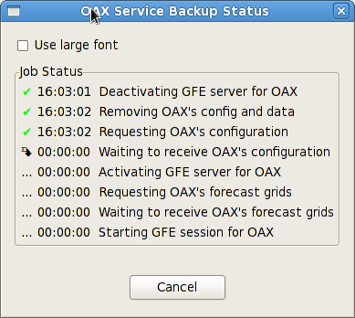

The Service Backup Status Dialog displays status of active Service Backup jobs. These jobs consist of a list a steps to be accomplished. Each step is displayed on a separate line with a status icon and a time.

The status icons are listed below along with their meaning:
Steps that are in progress will show the elapsed time for the step to the right of the icon.
Completed steps will show the time of day when the step was completed.
Clicking the Cancel button will cause the job to terminate.
Checking the "Use large font" box will cause the dialog to display using a large font so you can monitor the progress of the job from another workstation.